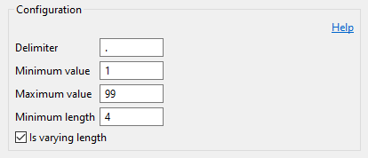
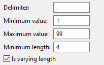
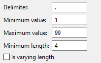
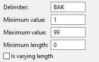

The available options are:
| Delimiter | - | Delimiter that separates the member name from the sequence number. |
| Minimum value | - | Specifies the starting value of the sequence number. |
| Maximum value | - | Specifies the maximum value of the sequence number. Renaming a member fails when the maximum sequence number has been reached. |
| Minimum length | - | Minimum number of characters to be taken from the original name, if the new name exceeds a length of 10 characters. |
| Is varying length | - | Indicates whether the old name can be shortened in order to produce
a new name up to 10 characters. If this property is set to false, then the new name is produced by the specified number of characters of the original name followed by the delimiter and a sequence number. Otherwise the new name is made of the maximum possible number of characters of the original name followed by the delimiter and a sequence number. |
Sequence numbers are generated as fixed-length numbers, such as .01, .02, .03 to .99. For example:
| Original name | - | DEMO1 |
| First backup | - | DEMO1.01 |
| Second backup | - | DEMO1.02 |
| Third backup | - | DEMO1.03 |
Gaps in the list of existing backup members are not filled but skipped. For example consider the following situation:
| DEMO1 |
| DEMO1.01 |
| DEMO1.02 |
| DEMO1.03 |
| DEMO1.04 (missing) |
| DEMO1.05 (missing) |
| DEMO1.06 |
| DEMO1.07 (next backup member name) |
In the example above, the next backup member name will be DEMO1.07, because the gaps of DEMO1.04 and DEMO1.05 are skipped.
In case of the new name exceeds 10 characters, the rule attempts to reduce the number of characters taken from the original name to produce a new name with a length of 10 characters.
In this example Minimum length has a value of 4 and the Is varying length property is set to true. Therefore, the new name will always start with the maximum possible number of characters of the original name, followed by the delimiter and a sequence number.
Settings:

Members to copy:
| DEMO01 |
| DEMO012 |
| DEMO0123 |
| DEMO01234 |
As a result, the existing members will be renamed to:
| DEMO01.01 | (was DEMO01) |
| DEMO012.01 | (was DEMO012) |
| DEMO012.02 | (was DEMO0123) |
| DEMO012.03 | (was DEMO01234) |
In this example Minimum length has a value of 4 and the Is varying length property is set to false. Therefore, the new name will always start with the first 4 characters of the original name, followed by the delimiter and a sequence number.
Settings:

Members to copy:
| DEMO01 |
| DEMO012 |
| DEMO0123 |
| DEMO01234 |
As a result, the existing members will be renamed to:
| DEMO01.01 | (was DEMO01, not shortened, because was < 10) |
| DEMO012.01 | (was DEMO012, not shortened, because was < 10) |
| DEMO.01 | (was DEMO0123, shortened, because was > 10) |
| DEMO.02 | (was DEMO01234, shortened, because was > 10) |
In this example Minimum length has a value of zero and the Is varying length property is set to false. The delimiter is specified as BAK. This is a very special case, where the new name is composed by BAK followed by a sequence number.
Settings:

Members to copy:
| DEMO01 |
| DEMO012 |
| DEMO0123 |
| DEMO01234 |
As a result, the existing members will be renamed to:
| BAK01 | (was DEMO01) |
| BAK02 | (was DEMO012) |
| BAK03 | (was DEMO0123) |
| BAK04 | (was DEMO01234) |